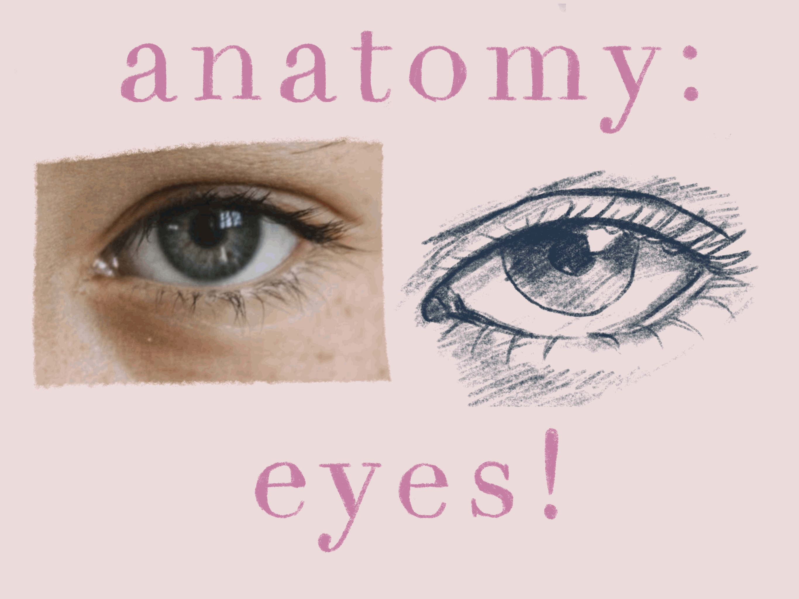

color theory!

let's learn how to draw eyes!
one vital lesson of art is breaking down complex shapes into simple ones! we're going to use this reference photo of an eye, and break it down into a circle and a thin football, or an almond, shape!
to capture the entire likeness of the eye, pay attention to other small features, like the eyelid fold, the shape of the tearduct, the pupil, the location of the highlight, and the thickness of the lower waterline! these fine details will transform your eye from simple to realistic!
eyelashes are one of the hardest parts of drawing eyes! remember to draw lightly, and that eyelashes first droop inward, then flick and taper off outward!

next, add depth to your drawing by shading! observe the darker areas of your reference photo and lightly shade in areas like the undereye, the eyelid crease, and the iris!
congrats! you did it! use the same concepts to draw all types of eyes, as shown on the right. remember that practice makes improvement, so don't be afraid to keep trying even if your first few attempts don't turn out well!
we hope you learned lots about drawing eyes today! don't forgot to go the the try it! tab to try out your art skills on various different websites!